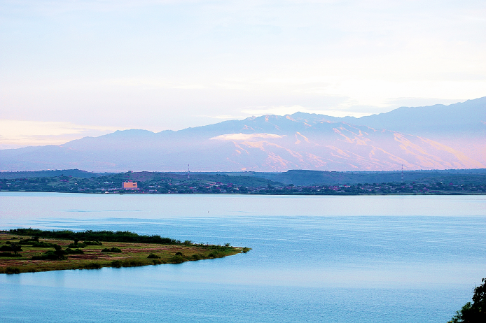

Irving Penn once wrote, "The severe portrait that is not the greatest joy in the world to the subject may be enormously interesting to the reader". This makes a photographic portrait a picture of someone who knows he is being photographed, and what he does with this knowledge is as much a part of the photograph as what he's wearing or how he looks.
What is surprising is, how you talk to your portrait subjects is more important than your gear or technique. The connection between photographer and subject creates authentic moments that no amount of expensive equipment can replicate. Enjoy a few portraits captured at different moments...
